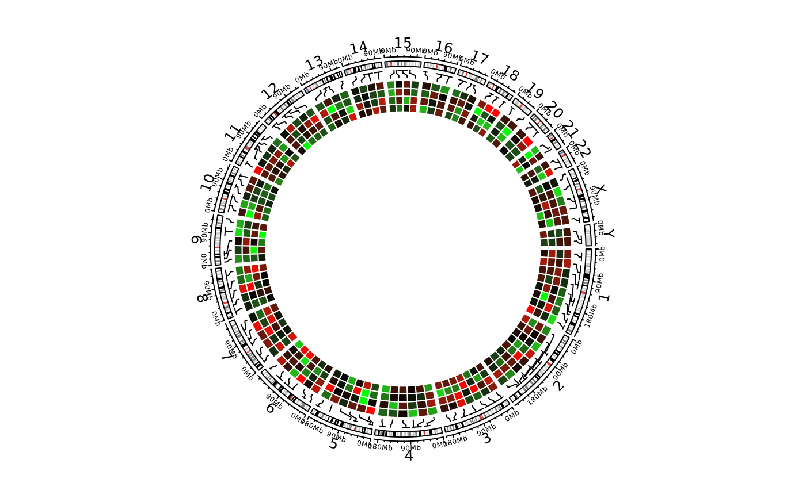

Object ccGenomicTrack will call the function circlize::circos.genomicHeatmap while drawing.
Usage
ccGenomicHeatmap(
bed,
col,
na_col = "grey",
numeric.column = NULL,
border = NA,
border_lwd = par("lwd"),
border_lty = par("lty"),
connection_height = mm_h(5),
line_col = par("col"),
line_lwd = par("lwd"),
line_lty = par("lty"),
heatmap_height = 0.15,
side = c("inside", "outside"),
track.margin = circos.par("track.margin")
)Arguments
- bed
A data frame in bed format, the matrix should be stored from the fourth column.
- col
Colors for the heatmaps. The value can be a matrix or a color mapping function generated by
colorRamp2.- na_col
Color for NA values.
- numeric.column
Column index for the numeric columns. The values can be integer index or character index. By default it takes all numeric columns from the fourth column.
- border
Border of the heatmap grids.
- border_lwd
Line width for borders of heatmap grids.
- border_lty
Line style for borders of heatmap grids.
- connection_height
Height of the connection lines. If it is set to
NULL, no connection will be drawn. Usemm_h/cm_h/inches_hto set a height in absolute unit.- line_col
Color of the connection lines. The value can be a vector.
- line_lwd
Line width of the connection lines.
- line_lty
Line style of the connection lines.
- heatmap_height
Height of the heatmap track
- side
Side of the heatmaps. Is the heatmap facing inside or outside?
- track.margin
Bottom and top margins.
Value
Object ccGenomicTrack
Examples
library(circlizePlus)
cc = ccPlot(initMode = "initializeWithIdeogram")
bed = generateRandomBed(nr = 100, nc = 4)
col_fun = colorRamp2(c(-1, 0, 1), c("green", "black", "red"))
t1 = ccGenomicHeatmap(bed, col = col_fun, side = "inside", border = "white")
#> Warning: `convert_length()` only works when aspect of the coordinate is 1.
cc + t1

circos.clear()